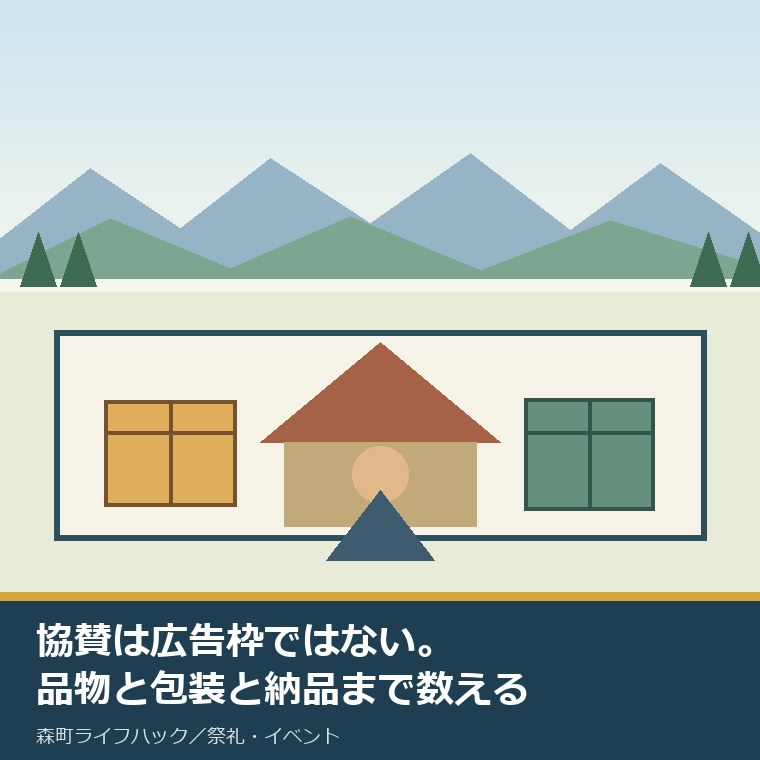
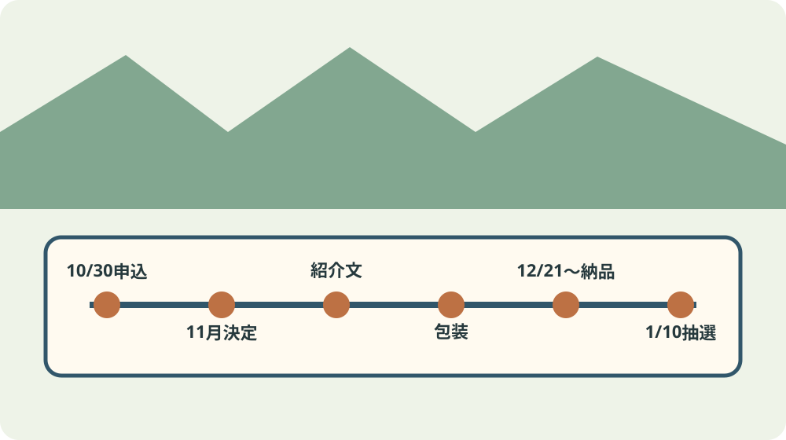
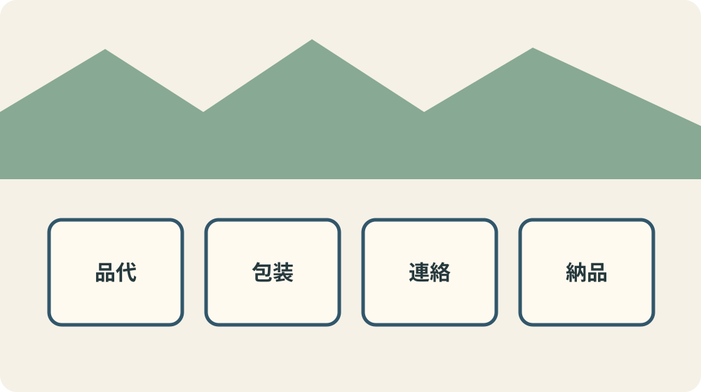

森町はたちの集い協賛｜2027年1月を支える条件

この記事の要点
Q. 森町の事業者が、2027年1月のはたちの集いを協賛する条件は何ですか。
A. 町内に事業所や店舗などがあり、町税などの滞納がない団体・事業者などが、自社商品か自社商品・サービスの引換券を1社10点以内で無償提供します。現金や金券は不可で、各社が包装します。申込期限は2026年10月30日17時。決定後は紹介文を用意し、12月21日から2027年1月7日に納品します。品代、包装、連絡、納品、中止時も返品されない条件まで社内で了承してから申し込みます。
森町は2026年8月19日、令和9年森町はたちの集いの協賛企業募集ページを更新しました。
式典は2027年1月10日日曜日の9時45分から、森町文化会館大ホールで開かれます。終了時刻は募集資料にありません。
対象となる若者は、2006年4月2日から2007年4月1日生まれの満20歳です。
協賛品は式典後の抽選会の景品です。全参加者へ同じ品を配る募集ではありません。
協賛はロゴを載せてもらう安い広告枠じゃない。品代、包装、連絡、納品、中止時の返品なしまで引き受ける。若者を応援するなら、見返りより先に自社の負担を数えます。
私は過去にこの協賛へ申し込んだ体験ストックを持ちません。資料で確定した条件と、事業者としての私の意見を分けます。
応募できるのは町内に拠点があり滞納のない事業者など
対象は、森町内に住所、事業所、店舗などがあり、町税などの滞納がない各種団体・事業者などです。
会社だけに限らず「各種団体・事業者等」と書かれていますが、自分の形態が対象かは事務局へ確認します。
法令や公序良俗に反するもの、そのおそれがあるもの、特定の政治・宗教・思想活動を目的とするものなどは対象外です。
暴力団などとの関係がある場合や、教育委員会が不適当と認める場合も応募できません。
申請書には、所在地、名称、代表者の役職と氏名、担当部署、担当者名、電話、メールを書きます。
協賛品の品目、サイズ、数量と、応募資格を満たす確認欄もあります。担当者個人の情報を公開すると募集資料には書かれていません。
公開予定なのは会社・店名と協賛品です。担当者名、電話、メールの保存期間と利用範囲は資料内で確認できませんでした。
協賛品は自社商品か引換券、1社10点以内
提供できるのは、自社の商品、または自社の商品・サービスの引換券です。
現金、商品券、ギフトカードなどの金券類は協賛品にできません。
数量は1社につき10点以内です。参加者全員分を用意する仕組みではありません。
各社がラッピングして納品し、未包装の品は受け付けないと要項にあります。
食品など保管上の配慮が要る品は、事務局と別途相談します。賞味期限や温度管理の共通基準は資料にありません。
引換券の有効期限、利用できる曜日、予約の要否、差額の扱いも基準が示されていません。
引換券を出す事業者は、受け取った若者が迷わない利用条件を券面に書き、申請時に事務局へ確認する方がよいです。
決定後に品物を変える場合は、速やかに事務局へ報告します。不適当な事項が生じれば決定を取り消す場合があります。

申込は10月30日17時まで、その後も1月まで仕事が続く
申込期限は2026年10月30日金曜日の17時です。「10月末」ではなく時刻まで決まっています。
申込用紙を郵送、FAX、メール、または持参します。Word版とPDF版の様式が公式ページにあります。
郵送は到着時刻を自分で管理できません。締切日に投函するのではなく、到着確認を含めた日を社内期限にします。
協賛の決定通知は2026年11月中旬頃です。申し込んだ時点で採用確定として品を大量発注しません。
2026年12月中旬頃までに、企業と協賛品の紹介文を提出します。文字数、画像、提出形式は確認資料で分かりません。
納品期間は2026年12月21日から2027年1月7日までです。土日祝日と12月29日から1月3日は受け付けません。
年末年始をまたぐため、12月21日から28日か、1月4日から7日の実働日に絞られます。
納品場所と一日の受渡時間は要項に明記されていません。決定通知を待つだけでなく、包装前に事務局へ確認します。
申込窓口は森町教育委員会社会教育課で、〒437-0215森町森1485、電話0538-85-1112、FAX0538-85-1116です。
費用はゼロではない：品代、包装、連絡、納品を足す
協賛品は無償提供です。協賛事業者が受け取る金銭的対価は記載されていません。
品物の原価だけを協賛額にすると、包装資材、作業時間、紹介文作成、納品の移動が消えます。
1点なら小さく見える作業も、10点を個別包装し、内容を確認し、担当者が会場へ運ぶと時間が積み上がります。
送料や持込交通費を誰が負担するか、費目別の記載はありません。事業者側の負担を前提に概算し、違えば直します。
通常開催後に残った品の返品、処分、繰越も未確認です。式典がやむを得ず中止になった場合は、提供済み協賛品を返品しないと明記されています。
中止時に戻らないことを了承できない在庫は出しません。期限の短い食品や高額品は、とくに事前相談が要ります。
協賛担当を一人に押しつけず、商品選定、包装、申請、納品を誰が担うか人名で分けます。
若者を応援する善意が、従業員の残業や休日運搬へ変わったら続きません。会社の勤務時間内に置ける協賛量にします。
申込前の社内判断は六つの欄で残す
一つ目は応募資格です。町内のどの住所、事業所、店舗を根拠にするか、町税などの滞納がないことを誰が確認したかを書きます。
二つ目は協賛品です。自社商品か、自社の商品・サービスの引換券かを明記します。仕入れただけの他社商品が対象になるとは要項から読めません。
三つ目は数量です。上限10点の範囲で、1点、3点、10点のどれが無理なく用意できるかを在庫と原価から決めます。
四つ目は受け取る若者の動きです。引換券なら、店までの移動、予約方法、利用できる日、有効期限を、初めて店を知る人にも分かる言葉で書きます。
五つ目は社内作業です。包装する人、紹介文を書く人、申請書を送る人、納品する人を分け、各作業を勤務時間内へ置きます。
六つ目は不確実な条件です。式典中止、通常開催後の残品、食品の保管、納品場所、受渡時間を並べ、事務局へまとめて確認します。
この六欄が空いたまま「地域のため」で決裁すると、後から担当者だけが穴を埋めます。善意を続けるための社内記録として残します。
原価は仕入価格だけではありません。商品を棚から外す時間、値札を確認する時間、包装資材を買う時間、申請書を直す時間も仕事です。
小さな店では、店主自身がすべてを担う場合もあります。それでも役割名を書けば、営業中に行うのか、閉店後に回るのかが見えます。
従業員がいる会社なら、協賛を決めた人と、実際に包装・納品する人が違うことがあります。作業する人の了承を取らずに点数を決めません。
サービス引換券は、若者が利用した時点でも仕事が発生します。予約受付、接客、材料、説明まで含め、券を渡した後の負担も数えます。
利用が集中する期間や除外日があるなら、券面で見えるようにします。条件を小さな文字だけに押し込むと、若者と現場の両方が困ります。
商品を初めて知ってもらう機会は魅力です。ただし、売り込みを急ぐより、当選した人が使い切れる条件を整える方が町内の店への信頼につながります。
協賛を見送る場合も、検討した原価と理由を残します。翌年、商品や人員が変わったときに、同じ検討を最初から繰り返さずに済みます。
町に協力するか、しないかの二択にしません。点数を減らす、食品を避ける、引換券の期間を長くするなど、自社に合う形へ小さくできます。
地域との関係は一回の抽選会だけで決まりません。無理を隠して一度きりで終えるより、負担を見える化して続けられる協賛を選びます。
申込期限の前日に結論を急がないため、社内の一次締切を2026年10月23日など一週間前に置きます。残る一週間を記入漏れと到着確認に使います。
締切を守ること自体が、実行委員会の確認、決定通知、抽選準備を遅らせない支えです。品物の量だけでなく、連絡の正確さも協賛の一部です。

良い点：品物と事業者名を若者へ伝える機会になる
良い点は、町内の事業者が、森町で二十歳を迎える若者へ具体的な品やサービスを届けられることです。
当日のプログラムには店名・会社名を掲載し、抽選会ではアナウンスで紹介すると要項にあります。
町公式サイトにも協賛企業名と協賛品を掲載する予定です。掲載時期は要項内で1月中旬頃と1月下旬頃の二つの記載があります。
紹介時期の表記差はありますが、当日だけでなく式典後も町内の仕事を知る入口になる可能性があります。
若者にとって、地元にどんな商品、店、サービスがあるかを知ることは、買い物や就職、帰省時の選択肢にもなります。
ただし、認知を得ることと売上を保証されることは別です。広告効果を確約された募集ではありません。
森町のふるさと納税4.1億円の使い道を整理した記事を見ると、地域へお金を届ける別の入口との違いが分かります。
注文したい点：納品と残品の扱いを申込前に見せたい
募集要項は応募資格、品物、数量、包装、期限を具体的に示しています。その上で、事業者が原価を出す前に知りたい空白があります。
納品場所、受渡時間、送料負担、通常開催後の残品、食品の賞味期限、引換券の有効期限の共通条件です。
申込後に個別調整する項目でも、何を後で決めるのか一覧があれば、相談の漏れを減らせます。
公式サイトへの掲載時期が同じ要項内で中旬頃と下旬頃に分かれる点も、一つにそろえてほしいです。
担当者の電話とメールを集めるため、利用目的、保存期間、公開しない範囲も申請書のそばにあると安心できます。
これは細かい注文に見えます。しかし、協賛者が増えるほど、事務局が個別に同じ説明をする回数も増えます。
共通条件を先に書くことは、申し込む側だけでなく、町、実行委員会、会館職員の連絡負担を減らします。
大石の視点：若者の応援を一人の持ち出しにしない
森町の事業者は、祭り、学校、地区、スポーツ、福祉など、すでに複数の形で地域を支えています。
新しい協賛募集を「地元なら当然」と重ねれば、断りにくい事業者ほど負担を抱えます。
私は、協賛することだけを地域貢献と呼びません。無理な年は申し込まない、少ない点数にする、引換券の利用条件を明確にすることも責任です。
森町の可能性は、若者の節目と町内の仕事が出会うことにあります。その可能性を、広告換算額だけで測りたくありません。
一方で、善意だから費用を数えないやり方では続きません。品代、包装、連絡、納品を台帳に残し、翌年もできる量を知ります。
もりもり2万人まつりを費用と人手から見た記事も、協賛の外にある担い手時間を考える材料です。
子どもへ地域の役が回るときの負担を考えた記事では、若い世代へ役割を当然視しない線を引いています。
祭りの模擬店で届出と許可を分けた記事のように、品物を協賛することと会場で販売することも別です。
対案・結論：10点出す前に、1点の総負担を出す
今日できる小さな一歩は、候補商品を一つだけ選び、品代、包装資材、作業分数、納品距離を書き出すことです。
その一行を10倍してから、本当に10点を出せるか決めます。募集上限は目標数ではありません。
食品なら保存条件、引換券なら有効期限と予約条件を事務局へ聞きます。中止時に返品されない条件も社内で共有します。
申込担当だけで決めず、包装する人、納品する人、サービスを提供する現場の人まで了承を取ります。
負担を数えても応援したいと思える品と点数なら、10月30日17時より前に申請書を送ります。
協賛は大きいほど立派なのではありません。若者へ渡り、現場が困らず、翌年も続けられる一箱が、森町を支える一箱です。
よくある質問
Q1. 森町はたちの集いの協賛に申し込めるのは誰ですか。
A1. 森町内に住所、事業所、店舗などがあり、町税などの滞納がない団体・事業者などが対象です。資格には除外条件もあるため、2026年8月19日更新の募集ページと要項を確認します。
Q2. 協賛できる品物と数量は決まっていますか。
A2. 自社の商品、または自社の商品・サービスの引換券を、1社10点以内で無償提供します。現金、商品券、ギフトカードなどの金券は不可です。各社で包装し、未包装では納品できません。
Q3. 協賛の申込期限と申込方法は何ですか。
A3. 期限は2026年10月30日金曜日17時です。申込用紙を郵送、FAX、メール、または持参します。決定は11月中旬頃、紹介文は12月中旬頃まで、協賛品の納品は12月21日から2027年1月7日です。
参考にした公式情報
- 令和9年森町はたちの集い協賛企業募集／静岡県森町（2026年8月19日更新。式典、応募資格、期限、申込方法を2026年9月5日に確認）
- 協賛企業募集要項／静岡県森町（品物、数量、包装、決定、紹介、納品、中止時の扱いを2026年9月5日に確認）
- 協賛申請書／静岡県森町（申請項目と確認欄を2026年9月5日に確認）

磐田市で小さな不動産業を営みながら、森町の空き家・農地・実家じまいの相談を受けています。地域と不動産実務をつなぐ目線で確認の順番を書きます。
最終確認日：2026-09-05 ／ 募集条件と日程は変わることがあります。納品場所・受渡時間、送料負担、通常開催後の残品、食品・引換券の共通条件、担当者情報の保存期間、公式サイト掲載時期の表記差は確認が要ります。申込前に森町公式ページと事務局へ確認してください。